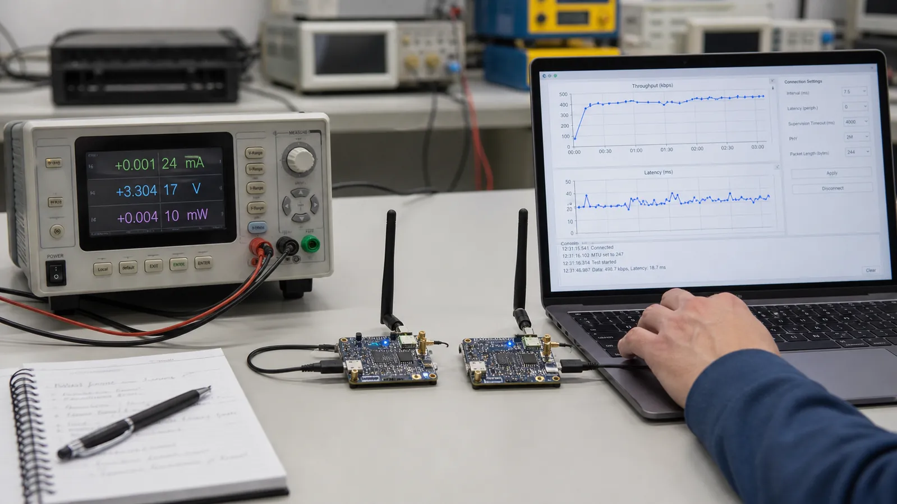

بهینهسازی BLE یک دکمه جادویی ندارد. بزرگکردن MTU، رفتن به 2M یا کوتاهکردن Interval تنها وقتی مفید است که بافر، Data Length، کیفیت لینک و توان پردازش هر دو طرف هماهنگ باشند.
MTU بزرگتر تعداد سربار ATT را برای داده حجیم کم میکند. Data Length Extension اجازه میدهد Payload بیشتری در یک پکت Link Layer جا شود. اگر یکی بزرگ و دیگری کوچک بماند، L2CAP داده را قطعهقطعه میکند و سود محدود میشود. اندازههای واقعی مذاکرهشده را از Capture بخوانید.
2M زمان روی هوا را کم میکند و در لینک قوی میتواند سرعت و انرژی هر بایت را بهتر کند. Coded PHY برای برد و حساسیت است، نه سرعت. تصمیم PHY را با Packet Error Rate و Retransmission بسنجید؛ سرعت اسمی بالا در لینک ضعیف ممکن است نتیجه بدتری بدهد.
Interval کوتاه فرصت ارسال بیشتری میدهد و Latency فرمان را کم میکند، اما بیداری رادیو زیاد میشود. Peripheral Latency برای سنسور کمترافیک مفید است. تعداد پکت قابل ارسال در هر Event نیز به کنترلر و سیستمعامل Central وابسته است.
یک Payload و مدت تست ثابت تعریف کنید. بایت کاربردی موفق، تأخیر صدکی، جریان متوسط، Peak Current، RSSI و تعداد Retransmission را ثبت کنید. هر بار فقط یک پارامتر را عوض کنید و برای شرایط نزدیک، دور و همراه Wi-Fi آزمایش تکرار کنید.
پروفایل تعاملی: Interval کوتاه، Latency صفر و در صورت لینک مناسب 2M. پروفایل سنسور باتریخور: Interval بلندتر، Latency مجاز و Notify فقط هنگام تغییر. دستگاه میتواند بعد از پایان تنظیمات از پروفایل تعاملی به پروفایل کممصرف منتقل شود.